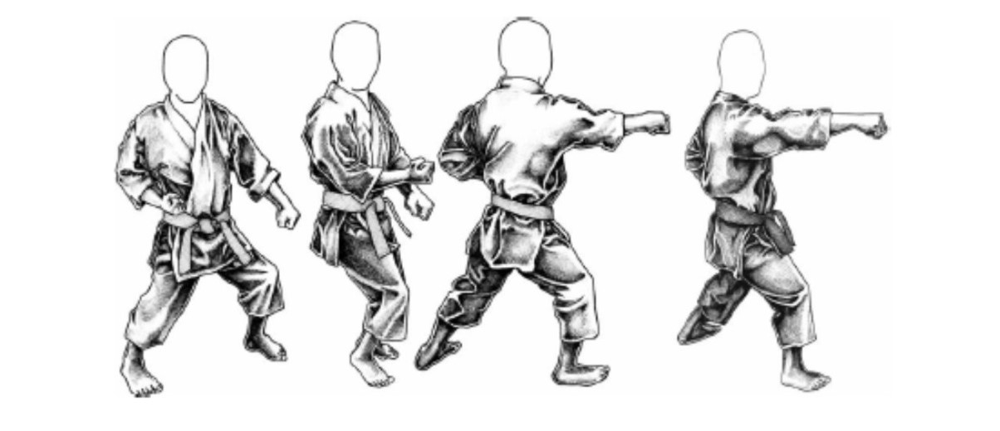

Graduações
A modernização e sistematização do Karate no Japão também incluíram a adoção do uniforme branco (Karate-Gi) e de cintos coloridos, indicadores da graduação alcançada pelo aluno.
| Cor | Graduação | Significado |
|---|---|---|
| Branco | 9º. Kyu | Representa a pureza e ingenuidade de seu portador, que deverá estar com mente e espírito limpos, porém com potencial para alcançar todas as outras faixas, como uma tela branca pronta para ser pintada. |
| Amarelo | 8º. Kyu | O amarelo simboliza o sol nascente de todos os dias. Indica que o conhecimento está aflorando e a fortalecer-se no aluno. Ao usar essa faixa o praticante deve desenvolver a luz da sabedoria e da criatividade. O amarelo simboliza alegria, criatividade, juventude e nobreza. |
| Laranja | 7º. Kyu | O laranja é a cor do calor afetivo, do equilíbrio, da comunicação e do encorajamento. Ao chegar a este nível, o praticante sente-se influenciado pelo otimismo e pela generosidade, sendo que a cor laranja remete ao aluno que ele deve fortalecer suas energias e a vontade de vencer. |
| Verde | 6º. Kyu | Cor da fé e da esperança. Traz a sensação de harmonia e o sentimento de que se alcançou a calmaria após as tempestades do trabalho árduo dos estágios anteriores, embora isso não signifique que o trabalho duro tenha acabado. É a cor que mais representa a natureza, e é nesse ponto que o aluno deve se comunicar mais fortemente com sua própria natureza. |
| Azul | 5º. Kyu | O Céu. Vasto e sem limites, ao mesmo tempo que indica tranquilidade, paz e segurança, mostra o quanto de conhecimento ainda se pode obter. Não há um limite. A cor azul mostra ao praticante que ele deve fortalecer as energias e a sua vontade de vencer. |
| Vermelho | 4º. Kyu | Motivação, atividade e vontade são as características dessa faixa. Simboliza a paixão, o impulso e atividade. Mas assim como o amarelo, o vermelho é uma cor primária, indicando que o aluno deverá se manter puro em relação ao seu estilo. |
| Castanho | 3º. a 1º. Kyu | Terra. É a cor da solidificação. Onde o praticante finca as raízes de todo o conhecimento adquirido até aqui e o torna sólido como uma rocha. É a cor da solidificação. Representa a constância, a disciplina, a uniformidade adquirida e a observação das regras mantidas até aqui. Representa a conexão do praticante com o patrono do estilo que lhe foi passado, representado por seus mestres. |
| Preto | De 1º. Dan a 12º. Dan | É a mistura de todas as cores, representando humildade, autocontrole, maturidade, serenidade, disciplina, responsabilidade, dignidade e conhecimento. É o karateka que conseguiu dominar os conhecimentos da arte e introduzir a filosofia e ensinamentos em seu espírito. |
